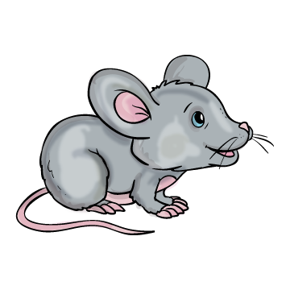
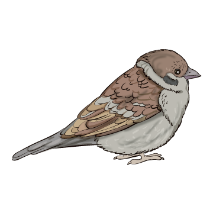
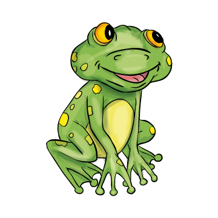

A kis híd-ja
A kis el-in-dult a ro-ko-na-i-hoz. Vá-rat-la-nul es-ni kez-dett az e-ső. Mi-kor a
kis ha-za-in-dult, i-jed-ten lát-ta: az á-rok te-le van víz-zel.
– Ó, ó, mi-ként ju-tok a túl-só part-ra? – só-haj-to-zott a kis . O-da-jött a kis cin-ke és a , o-da-fu-tott a kis  is.
– Ne sírj kis! – mond-ták. Le-tört fát ke-res-tek. A cin-ke és a tar-tot-ták a fa két ol-da-lát, a tar-tot-ta a kö-ze-pét, és ó-va-to-san az á-rok fö-lé fek-tet-ték.
– Itt a pom-pás híd! – ki-ál-tot-ták.
A kis ör-ven-dez-ve fu-tott át az új hí-don. A túl-só part-ról még in-tett ken-dő-jé-vel a cin-ké-nek és a -nek.
Az-u-tán ha-za-ment.